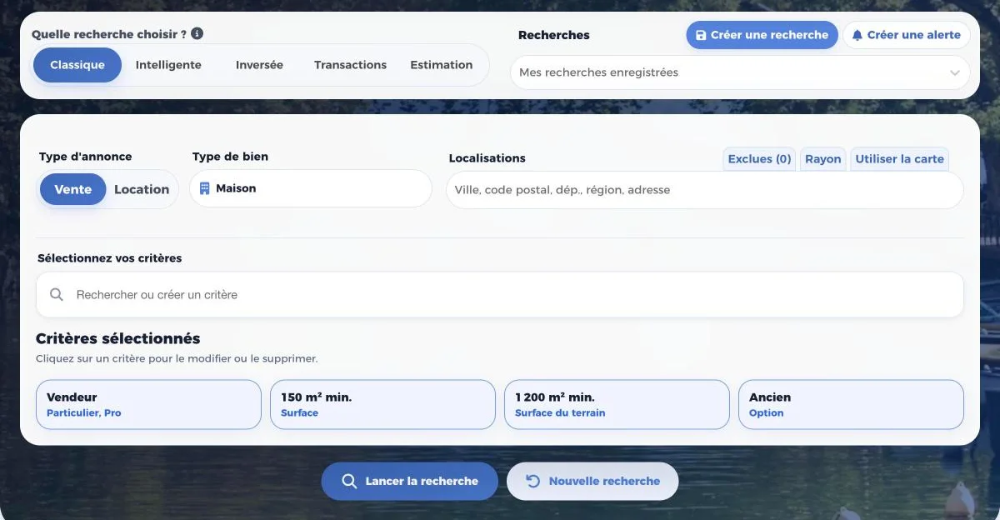
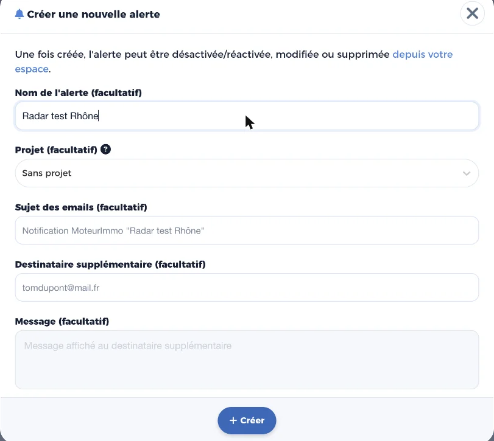
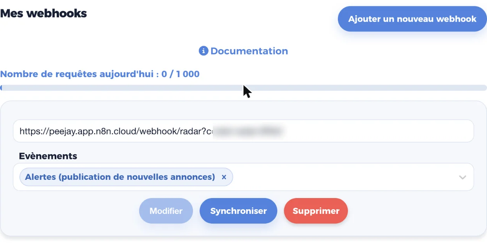

Comptez une dizaine de minutes. Vous faites tous les réglages vous-même, dans votre propre compte MoteurImmo. Nous vous accompagnons sur WhatsApp si besoin.
1. Créer votre compte MoteurImmo
Rendez-vous sur moteurimmo.fr, rubrique Inscription. L'inscription est gratuite et donne accès à la formule Agent pendant 10 jours d'essai. Vous pouvez aussi vous inscrire avec votre compte Google ou Apple.
Si vous avez déjà un compte MoteurImmo Agent, passez directement à l'étape 2.
À la fin de l'essai, la formule Agent coûte 39 € par mois, ou 390 € par an, réglés directement à MoteurImmo : Mon compte, onglet Abonnement, bouton « Prendre un abonnement ». C'est la formule qui permet le branchement de Radar.
2. Créer votre recherche
Dans l'onglet Recherche :
- choisissez Vente et le type de bien ;
- dans Localisations, tapez vos communes, codes postaux ou départements et choisissez-les dans la liste ;
- ajoutez vos critères : surface minimum, surface du terrain, ancien, budget…

Plus vos critères sont précis, moins vous recevez d'annonces hors sujet. Radar trie ensuite ce qui arrive avec sa note sur 10.
3. Transformer la recherche en alerte
En haut à droite, cliquez sur « Créer une alerte ». Donnez-lui un nom, par exemple votre secteur, puis cliquez sur « Créer ». L'alerte est activée tout de suite.

Toutes vos alertes MoteurImmo seront envoyées à Radar. Si une recherche ne doit pas passer par Radar, désactivez son alerte depuis votre espace MoteurImmo.
4. Ajouter le webhook Radar
Un webhook, c'est l'adresse à laquelle MoteurImmo envoie chaque nouvelle annonce. C'est ce qui relie votre compte à Radar.
- Ouvrez Mon compte, puis l'onglet Webhooks.
- Cliquez sur « Ajouter un nouveau webhook ».
- Dans le champ de l'adresse, collez votre adresse Radar personnelle.
- Dans Évènements, gardez uniquement « Alertes (publication de nouvelles annonces) ». Les autres évènements ne servent pas à Radar.
- Cliquez sur « Ajouter ». MoteurImmo affiche : « Le webhook a bien été créé. »

5. Prévenez-nous
Écrivez « C'est fait » sur WhatsApp. Nous vérifions que la première annonce arrive bien et nous vous le confirmons. Ensuite, les alertes arrivent sur votre WhatsApp, notées, dès que MoteurImmo repère une annonce qui correspond à votre recherche.
Pour changer vos critères plus tard, modifiez votre recherche dans MoteurImmo, ou écrivez-nous.
Une question ?
Écrivez-nous sur WhatsApp ou à ops@gild-tech.com.